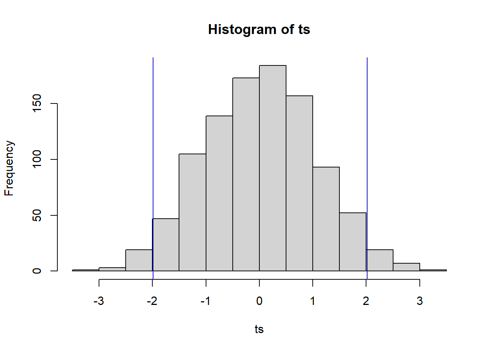

Chapter 4 Randomization and Permutation Testing
4.1 Setup
Randomization/permutation testing is performed in the context of randomized intervention experiments or observational studies to examine the differences in response between two groups. The setting is similar to the setting in which the two-sample t-test is often used, but there are few other similarities.
A general algorithm for a randomization test of two groups, labelled, say, 0 and 1, is as follows:
1. Choose some statistic, say \(T\), quantifying the response difference between the groups and compute this \(T = t_0\) for the observed data.
For m in 1:M repeat:
2. Permute the 0,1 labels of the responses. If the data comes from a randomized experiment this is like saying the randomization of subjects to treatments turned out differently, hence the name randomization test.
3. Compute the \(m^{th}\) statistic value \(t_m\) on the responses with permuted/re-randomized labels.
At the end of this algorithm we end up with the values \(t_1, \ldots, t_m\). What do we make of these? Here’s the idea. For a concrete example, suppose \(T\) is the Student’s \(t\) two-sample test statistic, i.e., \(T = \frac{\overline x_0 - \overline x_1}{\sqrt{S_0^2/n_0 + S_1^2/n_1}}\). Let \(x\) denote all the responses of both groups pooled together, i.e., \(x = (x_{0,1}, ..., x_{0,n_0}, x_{1,1}, ...,x_{1,n_1})\). \(x\) has some sample mean value; call it \(\overline x\). If we randomly label \(n_0\) of the x’s 0 and the other \(n_1\) of them 1, we should expect the average value of \(\overline x_0 - \overline x_1\) to be about 0 when averaging over repeated re-labeling. That’s because \(\overline x_0\) and \(\overline x_1\) are both approximately unbiased for \(\overline x\). So the distribution/histogram of the \(t_1, ..., t_m\) values will look roughly symmetric around zero. Then, we compare the observed value \(t_0\) to this distribution and observe whether \(t_0\) is a “typical” value or and “extreme” value compared to \(t_1, ..., t_m\); that is, we compare \(t_0\) the the quantiles of \(t_1, ..., t_m\). If \(t_0\) is extreme compared to these values, then either we observed such a value by a small chance or the labels really do have an effect on the responses which is reflected in the statistic \(T\).
This description should sound very similar to null hypothesis testing and rejection rules defined by comparing a test statistic to a null distribution. But,there are some differences. In this case, the “population” consists only of the observed values. And, the randomization distribution—the histogram/quantiles of \(t_1, ..., t_m\)—is only related to the observed data, not any larger population. This means that the “null hypothesis” that a randomization test tests is related only to the observed data. I think of the null and alternative hypotheses as the following: \(H_0: \text{the observed value } t_0 \text{ is consistent with labels being randomly assigned to responses}\) versus \(H_a: \text{the observed value } t_0 \text{ is NOT consistent with labels being randomly assigned to responses}\). Because the test references no population, the conclusion is only pertinent to the sampled subjects. If the original labels were assigned by randomization (i.e., they represent an intervention) then the conclusion may claim causation.
4.1.1 Example 1: The Harris Bank Sex Pay Study
We have worked with this data before: there are 93 salaries of Harris Bank employees from 1969-1971. The workers are all entry-level clerical workers. We’re interested in whether males and females are paid differently.
Download salaries.csvsalaries.df <- read.csv('salaries.csv')
salaries.df## Salary Sex
## 1 4620 1
## 2 5040 1
## 3 5100 1
## 4 5100 1
## 5 5220 1
## 6 5400 1
## 7 5400 1
## 8 5400 1
## 9 5400 1
## 10 5400 1
## 11 5700 1
## 12 6000 1
## 13 6000 1
## 14 6000 1
## 15 6000 1
## 16 6000 1
## 17 6000 1
## 18 6000 1
## 19 6000 1
## 20 6000 1
## 21 6000 1
## 22 6000 1
## 23 6000 1
## 24 6000 1
## 25 6300 1
## 26 6600 1
## 27 6600 1
## 28 6600 1
## 29 6840 1
## 30 6900 1
## 31 6900 1
## 32 8100 1
## 33 3900 0
## 34 4020 0
## 35 4290 0
## 36 4380 0
## 37 4380 0
## 38 4380 0
## 39 4380 0
## 40 4380 0
## 41 4440 0
## 42 4500 0
## 43 4500 0
## 44 4620 0
## 45 4800 0
## 46 4800 0
## 47 4800 0
## 48 4800 0
## 49 4800 0
## 50 4800 0
## 51 4800 0
## 52 4800 0
## 53 4800 0
## 54 4800 0
## 55 4980 0
## 56 5100 0
## 57 5100 0
## 58 5100 0
## 59 5100 0
## 60 5100 0
## 61 5100 0
## 62 5160 0
## 63 5220 0
## 64 5220 0
## 65 5280 0
## 66 5280 0
## 67 5280 0
## 68 5400 0
## 69 5400 0
## 70 5400 0
## 71 5400 0
## 72 5400 0
## 73 5400 0
## 74 5400 0
## 75 5400 0
## 76 5400 0
## 77 5400 0
## 78 5400 0
## 79 5400 0
## 80 5520 0
## 81 5520 0
## 82 5580 0
## 83 5640 0
## 84 5700 0
## 85 5700 0
## 86 5700 0
## 87 5700 0
## 88 5700 0
## 89 6000 0
## 90 6000 0
## 91 6120 0
## 92 6300 0
## 93 6300 04.1.2 Difference in mean salaries between genders
n0 <- sum(salaries.df$Sex==0)
n1 <- sum(salaries.df$Sex==1)
m0 <- mean(salaries.df$Salary[salaries.df$Sex==0])
m1 <- mean(salaries.df$Salary[salaries.df$Sex==1])
s0 <- var(salaries.df$Salary[salaries.df$Sex==0])
s1 <- var(salaries.df$Salary[salaries.df$Sex==1])
t0 <- (m0 - m1)/sqrt(s0/n0+s1/n1)
c(t0,m0,m1,sqrt(s0),sqrt(s1))## [1] -5.829974 5138.852459 5956.875000 539.870658 690.7333064.1.3 Randomization test for treatment significance
Algorithm: for 1000 loops do: 1. randomly shuffle the sex labels over salaries 2. compute the two-sample t-test stat for the reshuffled labels return all 1000 differences
n0 <- sum(salaries.df$Sex==0)
n1 <- sum(salaries.df$Sex==1)
n <- n0+n1
randomization.test <- function(M){
ts <- rep(NA,M)
for(m in 1:M){
permute.n <- sample.int(n,n,replace = F)
re.randomized.group <- salaries.df$Sex[permute.n]
m0 <- mean(salaries.df$Salary[re.randomized.group==0])
m1 <- mean(salaries.df$Salary[re.randomized.group==1])
s0 <- var(salaries.df$Salary[re.randomized.group==0])
s1 <- var(salaries.df$Salary[re.randomized.group==1])
ts[m] <- (m0 - m1)/sqrt(s0/n0+s1/n1)
}
return(ts)
}
ts <- randomization.test(1000)
hist(ts)
abline(v = quantile(ts, 0.975), col = 'blue')
abline(v = quantile(ts, 0.025), col = 'blue')
The \(t_0\) value of \(-5.83\) is off the chart (literally). How do we interpret this? The test randomly labels observed sexes with observed salaries. The observed test statistic suggests this is not how the salaries were actually assigned to workers. That’s pretty obvious—companies do not tend to assign salaries in a random fashion. But, if the salary assignment was not random with respect to sex, then it either depended on sex or depends on a hidden variable closely associated with sex. Since the job, time frame, and experience level were controlled for, it is certainly plausible that the salary assignment depended on sex.
n0 <- sum(salaries.df$Sex==0)
n1 <- sum(salaries.df$Sex==1)
n <- n0+n1
randomization.test <- function(M, df){
ts <- rep(NA,M)
for(m in 1:M){
permute.n <- sample.int(n,n,replace = F)
re.randomized.group <- df$Sex[permute.n]
m0 <- mean(df$Salary[re.randomized.group==0])
m1 <- mean(df$Salary[re.randomized.group==1])
s0 <- var(df$Salary[re.randomized.group==0])
s1 <- var(df$Salary[re.randomized.group==1])
ts[m] <- (m0 - m1)/sqrt(s0/n0+s1/n1)
}
return(ts)
}
grid.delta <- seq(from = 400, to = 1400, length.out = 100)
L <- length(grid.delta)
p.value <- rep(NA,L)
reject<-rep(NA, L)
for(j in 1:L){
temp.df <- salaries.df
temp.df$Salary[temp.df$Sex==1]<-temp.df$Salary[temp.df$Sex==1]-grid.delta[j]
m0 <- mean(temp.df$Salary[temp.df$Sex==0])
m1 <- mean(temp.df$Salary[temp.df$Sex==1])
s0 <- var(temp.df$Salary[temp.df$Sex==0])
s1 <- var(temp.df$Salary[temp.df$Sex==1])
t0 <- (m0 - m1)/sqrt(s0/n0+s1/n1)
test.vals.j <- randomization.test(10000, temp.df)
mean.randomization <- mean(test.vals.j)
p.value[j] <- ifelse(t0 > mean.randomization,sum(abs(test.vals.j)>t0)/10000,sum(-abs(test.vals.j)<t0)/10000)
}
cbind(grid.delta, p.value)## grid.delta p.value
## [1,] 400.0000 0.0040
## [2,] 410.1010 0.0035
## [3,] 420.2020 0.0060
## [4,] 430.3030 0.0051
## [5,] 440.4040 0.0097
## [6,] 450.5051 0.0106
## [7,] 460.6061 0.0143
## [8,] 470.7071 0.0119
## [9,] 480.8081 0.0168
## [10,] 490.9091 0.0237
## [11,] 501.0101 0.0279
## [12,] 511.1111 0.0322
## [13,] 521.2121 0.0401
## [14,] 531.3131 0.0430
## [15,] 541.4141 0.0515
## [16,] 551.5152 0.0621
## [17,] 561.6162 0.0765
## [18,] 571.7172 0.0848
## [19,] 581.8182 0.0943
## [20,] 591.9192 0.1124
## [21,] 602.0202 0.1218
## [22,] 612.1212 0.1482
## [23,] 622.2222 0.1718
## [24,] 632.3232 0.1910
## [25,] 642.4242 0.2207
## [26,] 652.5253 0.2498
## [27,] 662.6263 0.2701
## [28,] 672.7273 0.3074
## [29,] 682.8283 0.3417
## [30,] 692.9293 0.3774
## [31,] 703.0303 0.4171
## [32,] 713.1313 0.4561
## [33,] 723.2323 0.5007
## [34,] 733.3333 0.5524
## [35,] 743.4343 0.5968
## [36,] 753.5354 0.6519
## [37,] 763.6364 0.6970
## [38,] 773.7374 0.7542
## [39,] 783.8384 0.8093
## [40,] 793.9394 0.8657
## [41,] 804.0404 0.9225
## [42,] 814.1414 0.9801
## [43,] 824.2424 0.9654
## [44,] 834.3434 0.9051
## [45,] 844.4444 0.8566
## [46,] 854.5455 0.7979
## [47,] 864.6465 0.7320
## [48,] 874.7475 0.6853
## [49,] 884.8485 0.6395
## [50,] 894.9495 0.5872
## [51,] 905.0505 0.5317
## [52,] 915.1515 0.4901
## [53,] 925.2525 0.4425
## [54,] 935.3535 0.4114
## [55,] 945.4545 0.3667
## [56,] 955.5556 0.3337
## [57,] 965.6566 0.2968
## [58,] 975.7576 0.2655
## [59,] 985.8586 0.2435
## [60,] 995.9596 0.2090
## [61,] 1006.0606 0.1901
## [62,] 1016.1616 0.1576
## [63,] 1026.2626 0.1433
## [64,] 1036.3636 0.1158
## [65,] 1046.4646 0.1073
## [66,] 1056.5657 0.0962
## [67,] 1066.6667 0.0801
## [68,] 1076.7677 0.0734
## [69,] 1086.8687 0.0602
## [70,] 1096.9697 0.0486
## [71,] 1107.0707 0.0460
## [72,] 1117.1717 0.0375
## [73,] 1127.2727 0.0298
## [74,] 1137.3737 0.0252
## [75,] 1147.4747 0.0220
## [76,] 1157.5758 0.0159
## [77,] 1167.6768 0.0130
## [78,] 1177.7778 0.0116
## [79,] 1187.8788 0.0090
## [80,] 1197.9798 0.0091
## [81,] 1208.0808 0.0058
## [82,] 1218.1818 0.0069
## [83,] 1228.2828 0.0056
## [84,] 1238.3838 0.0038
## [85,] 1248.4848 0.0019
## [86,] 1258.5859 0.0031
## [87,] 1268.6869 0.0024
## [88,] 1278.7879 0.0015
## [89,] 1288.8889 0.0015
## [90,] 1298.9899 0.0013
## [91,] 1309.0909 0.0011
## [92,] 1319.1919 0.0007
## [93,] 1329.2929 0.0005
## [94,] 1339.3939 0.0002
## [95,] 1349.4949 0.0006
## [96,] 1359.5960 0.0005
## [97,] 1369.6970 0.0001
## [98,] 1379.7980 0.0002
## [99,] 1389.8990 0.0001
## [100,] 1400.0000 0.0001midpoint <- which.max(p.value)
lower.endpoint <- grid.delta[which.min(abs(0.05-p.value[1:midpoint]))]
upper.endpoint <- grid.delta[midpoint+which.min(abs(0.05-p.value[(midpoint+1):L]))]
c(lower.endpoint, upper.endpoint)## [1] 541.4141 1096.9697